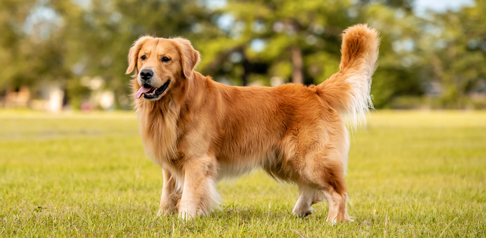
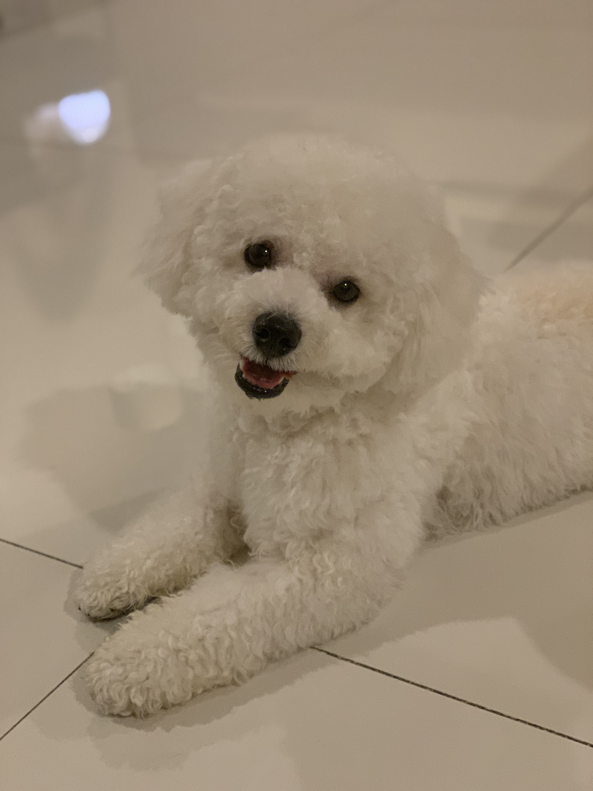
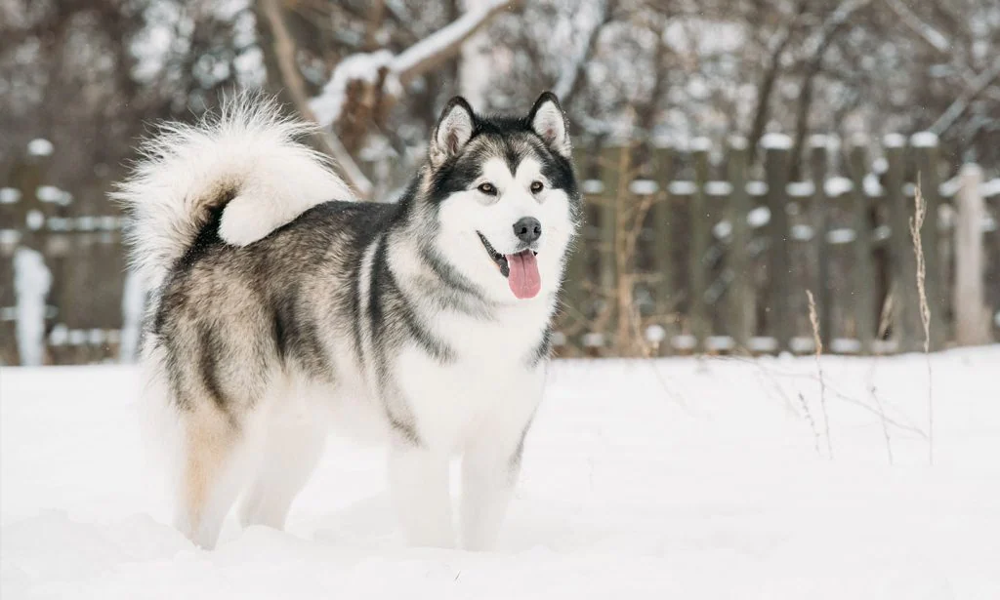

|
Picture
|
Breed
|
Description
|
|  |
Golden Retriever |
Golden retrievers weigh between 55 and 65 pounds as adults for males and 65 to 75 pounds for females. Their appearance can range from broad and dense to slimmer and more athletic, and their hue ranges from light golden to cream and dark golden to golden. Goldens are required by the AKC to walk with a muscular, smooth gait and to carry their feathery tails with a "merry movement." |
|  |
Bichon Frisé |
Bichons are between 9.5 and 11.5 inches height and weigh between 12 and 18 pounds. They always have a white coat, black eyes, and black nostrils. |
|  |
Alaskan Malamute |
Beautiful and majestic, Alaskan malamutes have a flirtatious tail that curls over their back. Their medium-sized nose, bright almond-shaped brown eyes, and alert, cheery demeanor exude unlimited vitality. When they are moving around, their pointed ears stand straight up and even lean back; when they are resting, their ears will droop slightly to the sides of their broad head. |